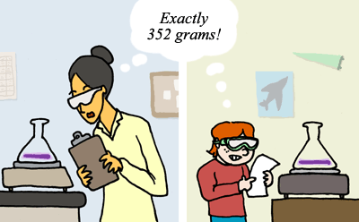

Scientists aim for their studies' findings to be replicable — so that, for example, an experiment testing ideas about the attraction between electrons and protons should yield the same results when repeated in different labs. Similarly, two different researchers studying the same dinosaur bone in the same way should come to the same conclusions regarding its measurements and composition. This goal of replicability makes sense. After all, science aims to reconstruct the unchanging rules by which the universe operates, and those same rules apply, 24 hours a day, seven days a week, from Sweden to Saturn, regardless of who is studying them. If a finding can't be replicated, it suggests that our current understanding of the study system or our methods of testing are insufficient.
Does this mean that scientists are constantly repeating what others before them have already done? No, of course not — or we would never get anywhere at all. The process of science doesn't require that every experiment and every study be repeated, but many are, especially those that produce surprising or particularly important results. In some fields, it is standard procedure for a scientist to replicate his or her own results before publication in order to ensure that the findings were not due to some fluke or factors outside the experimental design.
The desire for replicability is part of the reason that scientific papers almost always include a methods section, which describes exactly how the researchers performed the study. That information allows other scientists to replicate the study and to evaluate its quality, helping ensure that occasional cases of fraud or sloppy scientific work are weeded out and corrected.